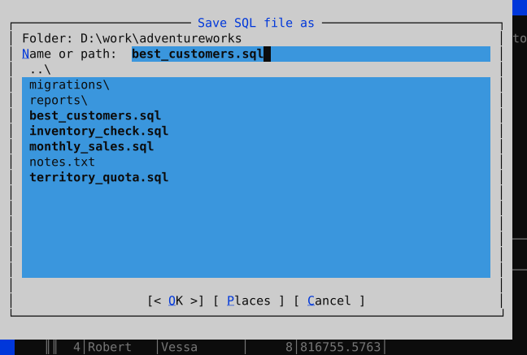

SQL files and result export
Opening and saving SQL files, the file dialog that all file commands share, and exporting a result to CSV, JSON or XML.
Where are the files? pgtc reads and writes files on the machine it runs on. If you use pgtc on a server over SSH, the files are on that server, not on the machine you sit at.
Opening a SQL file
- In the tree, put the cursor on the database the script is for (or on anything inside it). The new tab will be connected to that database.
- Choose (also in the context menu of the tree, F2).
- Pick the file in the file dialog and press Enter.

.sql files are highlighted.The file opens in a new query tab named after the file. While a large file is being read, the status line shows Opening … and you can go on working; the tab appears when the file is read.
- Files must be UTF-8 text (a byte-order mark at the start is accepted and dropped). A file in another encoding is refused with an error.
- Very large files are fine — see Large scripts.
- Without a database selected in the tree, the command is disabled.
Saving

* means there are changes that are not saved yet.| Command | Key | What it does |
|---|---|---|
| Ctrl+S | A tab with a file: writes the text to that file at once — no dialog, no question. The status line says Saved …. A tab without a file: the same as Save as. | |
Always opens the file dialog, in the folder of the tab's file and with its name filled in (a tab without a file: query.sql). Afterwards the tab belongs to the new file. |

- Save as asks before it overwrites a file that already exists.
- Files are written as UTF-8.
- Saving runs in the background (Saving …); you can keep typing. If you changed the text while it was being written, the tab stays marked as modified.
- Ctrl+S saves while the focus is in the editor or in the results. In the object tree the same key is quick search.
- Both commands are available only in a query tab.
A path that is too long for the file bar is shortened from the left: …\reports\best_customers.sql.
When you close a tab with unsaved changes, pgtc asks whether to save them — see Closing a query tab.
The file dialog
One dialog serves every file command: opening and saving SQL files, exporting a result, exporting and loading a database definition. It looks and works like the one in Midnight Commander.
| Part | What it is |
|---|---|
| Folder: | The folder whose contents the list shows. |
| Name or path | An input: type a file name, or a whole path. |
| The list | .. (the folder above), then the folders — their names end with \ or / — then the files. Files of the kind the command expects are highlighted. |
| OK, Places, Cancel | Buttons. |
Choosing with the list
- Press Tab to move from the input to the list (or click into it).
- Move with Up / Down / PgUp / PgDn / Home / End.
- Enter — or a double click — on a folder opens it; on
..goes up; on a file chooses it.
Typing a name or a path
Type into Name or path and press Enter:
| You type | Meaning |
|---|---|
report.sql | A file in the folder shown. |
reports/2026/q3.sql, ../other/x.sql | A path relative to the folder shown. |
D:\work\x.sql, /home/me/x.sql, \\server\share\x.sql | An absolute path. |
~, ~/sql/x.sql | Your home folder — on every platform. |
D: | Windows: the top folder of drive D. |
- If what you typed is a folder, the dialog goes there and stays open.
- If it is a file (or, when saving, a new name), it is opened or saved.
- If the folder of the path does not exist, you get an error and the dialog stays open. pgtc does not create folders.
- When saving, the right extension is your job: type
report.sql, notreport.
Places: drives and other starting points

Press Alt+P (the Places button). The list now shows starting points instead of a folder, and the Folder: line says Places:
~— your home folder;- the folder of the current tab's file, if the tab has one;
- Windows: every drive with its label (
C:\ System); network drives are marked Network, CD/DVD drives CD/DVD;
Linux:/, then what is mounted under/media/<you>,/run/media/<you>and/mnt;
macOS:/, then the volumes under/Volumes.
Enter or a double click opens a place; .. goes back to the folder you came from. On Windows,
.. at the top of a drive also leads to the places — that is how you change the drive without typing.
Where the dialog starts
The first file dialog after starting pgtc opens in your documents folder (not in the folder you started pgtc from). After that, every file dialog opens where the last one was — until you quit pgtc.
The dialog appears at once and shows Reading… until the folder is listed; a slow network drive does not freeze pgtc.
Exporting a result
Any result set can be written to a file as CSV, JSON or XML.
- Run the query and show the result set you want (if there are several).
- Choose — or, in the grid, F2 and .
- Choose the folder and the name as in every file dialog. The name is proposed as
result_1.csv(the number is the result set's number). - Choose the Format; the extension of the name follows it. For CSV, choose the CSV separator and whether to write a BOM.
- Press Enter on OK. If the file exists, pgtc asks before overwriting it.

The format, the separator and the BOM choice are remembered for the next export.
The whole result — not only what the grid shows
The export always contains every row of the result, also when the grid has loaded only the first 1,000. pgtc writes the loaded rows, then reads the rest from the server straight into the file. The query is not run a second time, and the rows do not have to fit in memory — a result of many millions of rows can be exported.
- While it runs, the status line counts the rows written and the tab status row says Exporting….
- Alt+Shift+C cancels. A cancelled or failed export deletes its incomplete file and tells you why.
- Afterwards the grid still shows the rows it had loaded, and its label says, for example,
1,000 of 1,234,567 rows (rest exported): the remaining rows went to the file, not to the grid. The query has then ended on the server. - While an export runs, the tab cannot execute anything else.
CSV
territoryid,name,countryregioncode,salesytd
1,Northwest,US,7887186.7882
6,Canada,CA,6771829.1376
7,France,FR,4772398.3078| Property | How it is written |
|---|---|
| First line | The column names. |
| Separator | , (default), ; or a tab — your choice in the dialog. |
| Quoting | A value is put in "…" only when it contains the separator, a quote or a line break; a quote inside is doubled (""). This is the standard form (RFC 4180). |
| NULL | An empty field. |
| Line ends | CR LF. |
| Encoding | UTF-8, with a BOM at the start if you check CSV with UTF-8 BOM. |
For Excel: check CSV with UTF-8 BOM, otherwise letters such as č, š, ž,
ü are shown wrongly. If your Windows uses the comma as the decimal sign (most of Europe), also choose the separator
; — then a double click on the file opens it in columns.
JSON
[
{"territoryid": 1, "name": "Northwest", "countryregioncode": "US", "salesytd": 7887186.7882},
{"territoryid": 6, "name": "Canada", "countryregioncode": "CA", "salesytd": 6771829.1376}
]An array with one object per row; the keys are the column names.
| PostgreSQL value | In JSON |
|---|---|
smallint, integer, bigint, oid, real, double precision, numeric | A number, written exactly as PostgreSQL sent it — no rounding. NaN and Infinity are written as strings, because JSON has no such numbers. |
boolean | true / false |
json, jsonb | Embedded as JSON, not as a string. |
| NULL | null |
| Everything else (text, dates, uuid, arrays, …) | A string, as PostgreSQL prints the value. |
If a result has two columns with the same name (SELECT 1 AS a, 2 AS a), the second key becomes
a_2, so no value is lost.
XML
<?xml version="1.0" encoding="UTF-8"?>
<result>
<columns><column name="territoryid"/><column name="name"/></columns>
<row><value>1</value><value>Northwest</value></row>
<row><value>6</value><value null="true"/></row>
</result>- The column names are listed once, in
<columns>; each<row>has one<value>per column, in the same order. - A NULL is
<value null="true"/>— different from an empty text,<value></value>. <,>and&are escaped.- XML cannot contain most control characters at all. A value that has one is written base64-encoded and marked
encoding="base64", so the file stays valid and nothing is lost.
Other ways to get data out
- A few values: Ctrl+C in the grid copies the cell; Ctrl+A then Ctrl+C copies the loaded rows, tab-separated with a header — paste them straight into a spreadsheet.
- The structure of a database (not its data): Database definition.